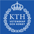
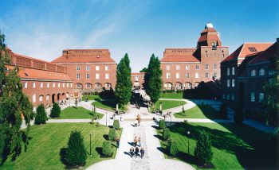

|
 |
||
NWERC 2006 |
||
Northwestern European Programming Contest 2006Welcome to NWERC, the Northwestern European Programming Contest, part of the ACM International Collegiate Programming Contest sponsored by IBM. The contest takes place 17-19 November in Stockholm.
 NWERC 2006 takes place 17-19 November at KTH - Royal Institute of Technology, Stockholm, Sweden. Join us for a good time and compete for a place in the World Finals!The competition is open to university student teams from Belgium, Denmark, Finland, Great Britain, Northwestern Germany, Ireland, Iceland, Luxembourg, The Netherlands, Norway, and Sweden. Latest News
Please note
Last yearIf you want to know about last year's contest, visit the NWERC 2005 webpage. Next year |
|